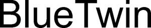

Trade Mark Journal No.2025/041 10 October 2025
WO0000001863302 (9,37,42)
Office of origin: Germany
Date of International Registration:9 April 2025
Date of designation in the UK:
9 April 2025

International priority date claimed: 10 October 2024
(Germany)
- Class 9
- Digital electronic controlling devices; digital electronic switching devices; electrical switching devices; switch boxes [electricity]; distribution consoles [electricity]; control panels [electricity]; electrical control boards; data processing apparatus; computers; apparatus and instruments for conducting, switching, transforming, accumulating, regulating or controlling electricity; apparatus for recording, transmission or reproduction of sound or images; all aforesaid apparatus, instruments and equipment for checking, controlling and monitoring of filters and filter installations or of machines, equipment, installations or motors with filters or filter installation; scientific, nautical, surveying, optical, weighing, measuring, signaling and checking apparatus and instruments; electrical or electronic apparatus, instruments, controllers, switchgear or control gear for controlling, regulating and monitoring filters and filtering equipment; electrical or electronic apparatus, instruments, controllers, switchgear or control gear for controlling, regulating or monitoring machines, appliances, installations or motors with filters or filter systems; filters for breathing masks; filters and filter systems for laboratory use; filter membranes for laboratory use; scientific apparatus with microporous hollow fibers for performing membrane separation processes; scientific apparatus and microporous hollow fibers for research and development work for use in the areas of gassing and degassing of liquids, removal of air bubbles from liquids, water treatment, production of semiconductors, food and beverage production; scientific apparatus for research and development work for processing chemicals and pharmaceuticals; electrical control apparatus for filters and filtration systems on boats and watercraft; NFC tokens (near field communication); near field communication keys; gateways for the Internet of Things [IoT]; sensors for the Internet of Things [IoT]; range extenders for the Internet of Things [IoT]; computer hardware modules for use in electronic devices for the Internet of Things [IoT]; computer application software for use in implementing the Internet of Things [IoT]; parts and fittings for all the aforesaid goods included in this class.
- Class 37
- New installation, commissioning, inspection, maintenance, servicing, repairs, revision and replacement of hydraulic, electrical and electronic systems, equipment and their components including database hardware and data network hardware; new installation, commissioning, inspection, maintenance, repairs, revision and replacement of mobile and stationary filters, filter components, filtration systems, filtration equipment and filtration facilities, including components of these systems, equipment and facilities; installation, maintenance, servicing and repair of filters for machines, motors or engines; maintenance of mobile and stationary systems for filtration, cross-flow filtration and solvent recovery; maintenance and care of technical systems, hydraulic systems, technical equipment and their components through the exchange of fluids such as hydraulic and cooling lubricant fluids as well as technical gases or filter components for these fluids and gases; reconditioning and maintenance of filters and filter components in compliance with environmental regulations such as emission guidelines and other environmental criteria; maintenance, servicing and repair of electrical and electronic devices for influencing and controlling industrial work processes; installation and assembly of machines including computer hardware; provision of hardware for internet access to machine controls; provision of hardware for internet access to control systems and control devices for stationary filters, filters for vehicles, filters for ships and marine, filter components, filtration systems, filtration devices and filtration equipment; provision of internet applications for stationary filters, filters for vehicles, filters for ships and marine, filter components, filtration systems, filtration devices and filtration equipment; technical customer service of any kind, preferably maintenance and cleaning work as well as installation and repair of technical systems; all the aforementioned services, in particular in relation to technical equipment for mobile and stationary machines and systems, in particular for use in plant, machine and vehicle construction, including aircraft construction, rail vehicle construction and shipbuilding.
- Class 42
- Scientific and technological services and research and related design services; industrial analysis and research services; design and development of computer hardware and software; scientific and medical research; technological research; biotechnological research; research services; research advisory services; consulting in the field of filter technology; filter testing; technical advice on the selection and application areas of filters, filter systems and filter components; technical advice on the selection and application areas of ceramic filter materials, ceramic filter bodies and ceramic filter cartridges; development and testing of new fluid technologies, in particular of new filter systems, plant components and installation components for oil, water, lubricants, gases and cooling liquids; programming and implementation of software; hosting services; rental of software; rental of computer hardware and equipment; remote programming of machine controls and plant controls; rental, hiring and leasing of goods in connection with the provision of the aforesaid services, to the extent included in this class; consultancy and information relating to the aforesaid services, to the extent included in this class.
Boll & Kirch Filterbau Gesellschaft mit beschränkter Haftung
Representative: Patentanwälte BUSCHHOFF HENNICKE ALTHAUS, Kaiser-Wilhelm-Ring 24 , 50672 Köln, GERMANY